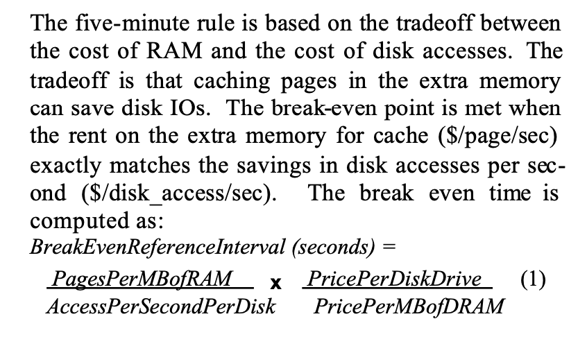
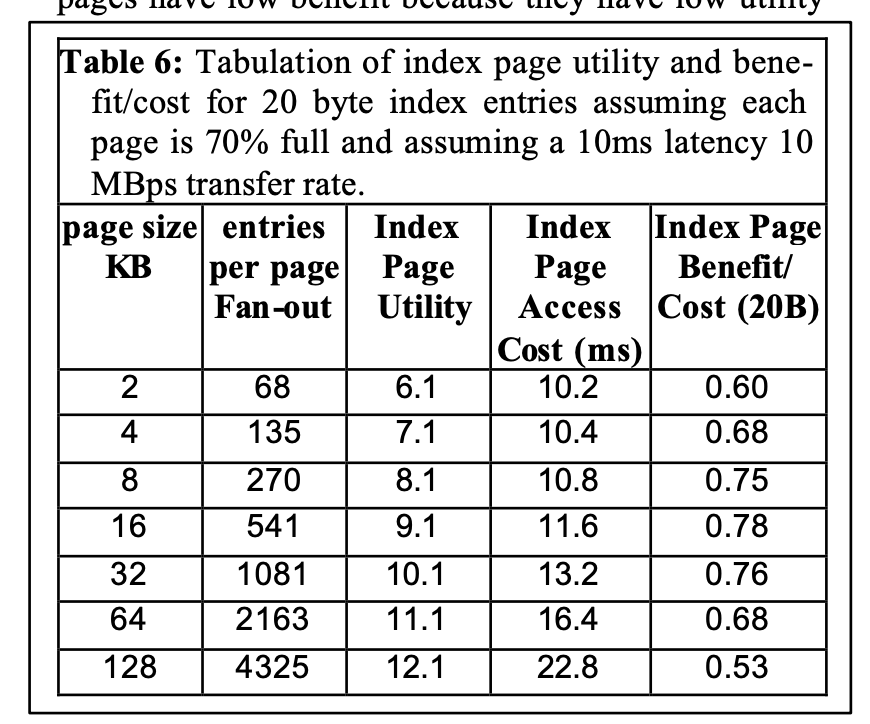

The Five Minute Rule 1997
文章的名字叫做《The Five-Minute Rule Ten Years Later, and Other Computer Storage Rules of Thumb》，它在1987年那篇文章上做了更多的分析：评估5min对于random access是否依然符合，评估如果是seq access的话那么时间应该是多少，以及db index page应该是多少比较合适。
The analysis indicates that with today's tech- nology, five minutes is a good lifetime for randomly accessed pages, one minute is a good lifetime for two-pass sequentially accessed pages, and 16 KB is a good size for index pages.
在1987年那篇文章，他们总结出一个公式，拆分成为两个部分，这样就跟容易针对场景进行分析了。
- 第一个部分是和技术/场景相关的公式(tech-ratio)，比如1MB有多少个pages, 以及disk的访问速度
- 第二个部分则是经济因素的公式(eco-ratio)，磁盘和内存价格比是多少

文章里面大部分都是数字的计算，我选择了几个场景稍微分析了一下。如果以RAID为介质的话，它access速度是提升了，但是同时price也会提升。如果是磁带介质的话，access速度下降，而price也会下降，但是可以遇见它的access速度下降更多，所以这个RI时间会增加特别多(文章里面提到可能会是2months).
然后作者在这个公式基础上，针对index page size做了一个分析，计算出16KB是当时比较合适的index page size. 这个挑选平衡是，假设index entry size=B, 那么一个page下面就有P/B个items. 如果在上面进行查找最多需要比较log2(P/B)次，将这个定义为index page utility. index page的cost是一次磁盘访问时间。
The utility of an index page measures how much closer the index page brings an associative search to the destination data record. It tells how many levels of the binary -tree fit on a page.
IndexPageAccessCost = Disk Latency + PageSize / DiskTransferRate
IndexPageBenefit/Cost = IndexPageUtility / IndexPageAccessCost.
Figure 7 graphs the benefit/cost ratios for various entry sizes and page sizes for both current, and next - generation disks. The graphs indicate that, small pages have low benefit because they have low utility and high fixed disk read costs. Very large pages also have low benefit because utility grows only as the log of the page size, but transfer cost grows linearly with page size.
Table 6 and Figure 7 indicate that for current devices, index page sizes in the range of 8 KB to 32 KB are preferable to smaller and larger page sizes. By the year 2005, disks are predicted to have 40 MB/s trans- fer rates and so 8 KB pages will probably be too small.
